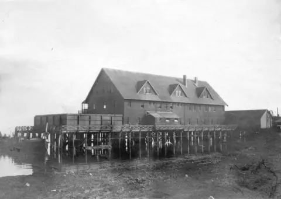
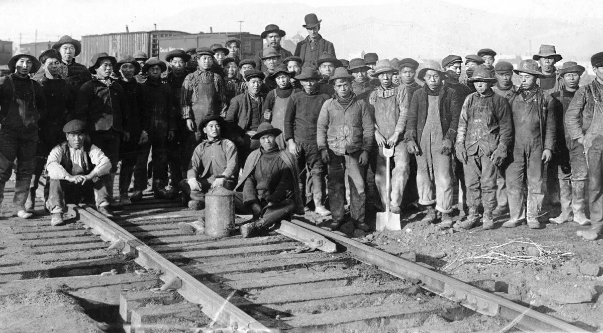

Three sites that disappeared
[Our reporting] Telltale grew out of five years of research for the Chung | Lind exhibitions: stories that would not fit on the gallery walls. Faith and April chose three sites that have since disappeared.

Chinese Detention Shed, foot of Burrard Street, Vancouver, 1890.
City of Vancouver Archives · CVA 153-2 · Click the photo to turn it over
[Our reporting: paraphrase from the interview, credited to April.]
Detention shed blueprint
City of Vancouver Archives
Chinese Detention Shed at Vancouver, 1890 · CVA 153-2
→ Open source
Royal BC Museum
Great Northern Railway track gang, c. 1884 · D-07548 (long mis-captioned as CPR workers)
→ Open sourceUBC Library
The Head Tax
→ Open sourcePrototype of one chapter. Text marked [Our reporting] is placeholder copy until the narrative is final. Faith and April’s ideas are paraphrased and credited, never quoted.